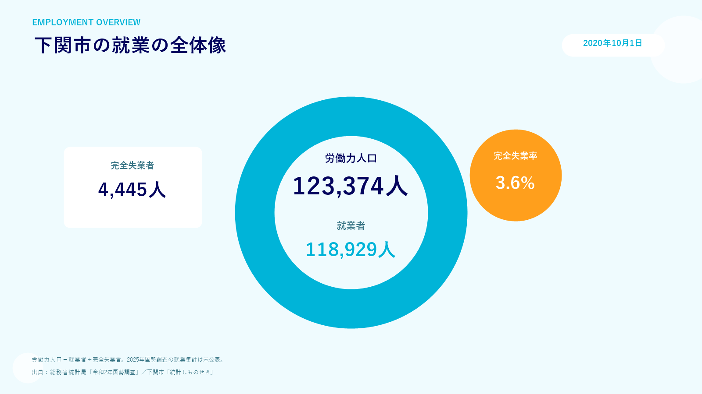
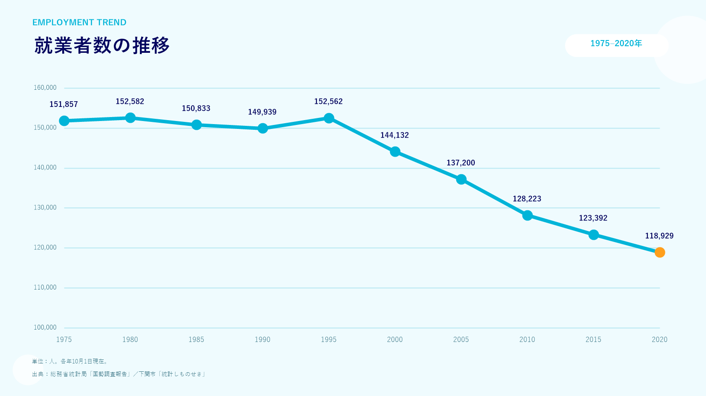
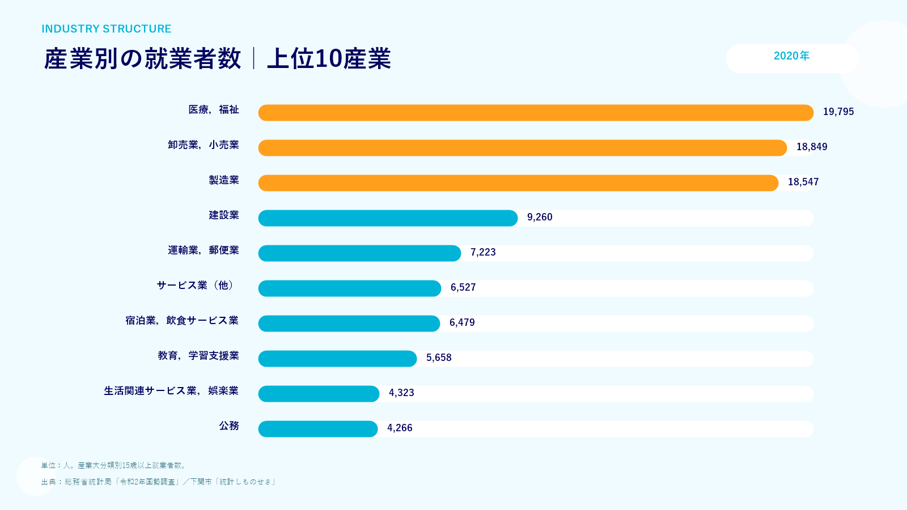
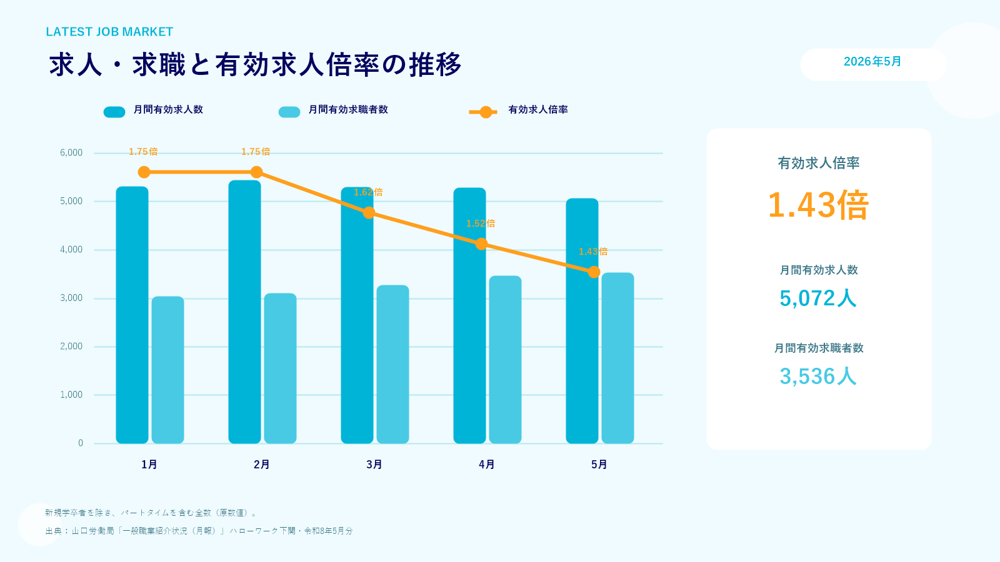
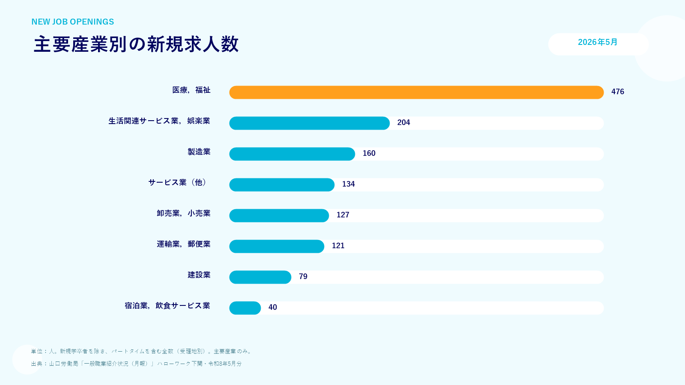

work 働く（仕事・雇用データ）
下関市の就業の全体像（2020年）を見ると、労働力人口は123,374人で、そのうち就業者は118,929人、完全失業率は3.6%となっています。就業者数の推移を見ると、1975年の151,857人から2020年には118,929人へと推移しています。
2020年の産業別就業者数では、「医療，福祉」（19,795人）、「卸売業，小売業」（18,849人）、「製造業」（18,547人）が上位を占めています。
直近の求人動向（2026年5月）では、有効求人倍率は1.43倍（月間有効求人数5,072人、月間有効求職者数3,536人）です。主要産業別新規求人数では、「医療，福祉」（476人）が最も多く、次いで「生活関連サービス業，娯楽業」（204人）、「製造業」（160人）となっています。





home 住まう（家賃データ） 令和5年データ
総務省の最新調査（令和5年 住宅・土地統計調査）に基づく、下関市の借家（専用住宅）における平均家賃データです。一人暮らし向けの1R・1Kから、ファミリー向けの広い間取りまで、ライフスタイルに合わせた住まい探しの参考にしてください。
| 間取り表記（参考換算） | 下関市の平均家賃 | 区分 |
|---|---|---|
| 1R・1K等 | 35,954 円/月 | 1室 |
| 1DK・1LDK等 | 41,815 円/月 | 2室 |
| 2DK・2LDK等 | 49,219 円/月 | 3室 |
| 3DK・3LDK等 | 42,651 円/月 | 4室 |
| 4DK・4LDK等 | 47,537 円/月 | 5室 |
| 5DK・5LDK等 | 71,628 円/月 | 6室 |
| 6LDK以上等 | 44,027 円/月 | 7室以上 |
※家賃0円を含まない平均家賃
child_care 育てる（最新の子育て支援）
下関市では、妊娠・出産から学童期まで、切れ目のない手厚い子育て支援策を次々と拡充しています。令和7年〜8年度にかけてスタートする注目の最新支援制度をご紹介します。
子ども医療費助成制度
高校生年代まで医療費の完全無償化
令和7年12月から、高校生年代まですべてのこどもの医療費について、医療保険適用の自己負担分を全額助成（完全無償化）いたします。
学校給食費支援事業
小中学校の給食費を通年無償化
物価高騰に対する経済支援として、令和8年度からは通年で下関市立小中学校の学校給食費を完全無償化します。
（参考：1食当たり 小学校390円、中学校455円）
就学前施設給食費無償化事業
3〜5歳児クラスの給食費無償化
令和8年4月から、対象施設に通う3〜5歳児クラスのこどもの給食費を無償化します。※市外施設や、お弁当持参でも同等の補助があります。
しもまちBABYタクシー
妊婦さんや赤ちゃんの安全な送迎
専門研修を受けた認定ドライバーが自宅から病院まで安全に移送します。令和8年度から無料利用回数を拡充（4回→10回）し、買い物支援も追加されました。